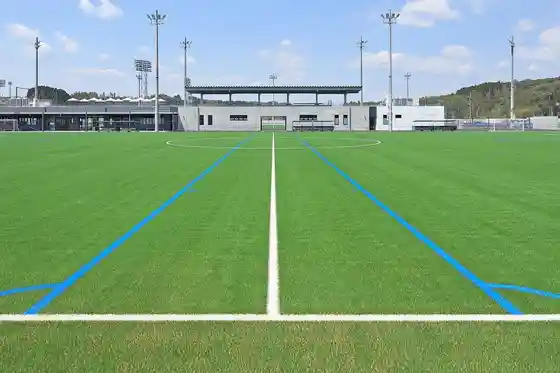
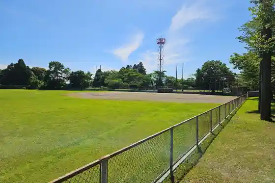

Shintomi Futtoboru Center
Shintomi, Miyazaki · 0983-32-1161 · Official / source link

Ichigo Miyazaki Shintomi Sakka Ba
Shintomi, Miyazaki · 0983-32-9555 · Official / source link
Shintomi Gym Kyudo Ba
Shintomi, Miyazaki · 0983-33-6080 · Official / source link
Kosuigaike Mizunuma Shrine
Shintomi, Miyazaki · 0983-33-6029 · Official / source link
Nitta Undo Plaza
Shintomi, Miyazaki · 0983-33-1022 · Official / source link

Yu no Miya no Zaron Ume
Shintomi, Miyazaki · 0983-33-6029 · Official / source link
Shintomi Hioki Undo Plaza
Shintomi, Miyazaki · 0983-33-1022 · Official / source link
Nitta Tenisukoto
Shintomi, Miyazaki · 0983-33-1022 · Official / source link
Shintomi Nishi Gym
Shintomi, Miyazaki · 0983-33-1022 · Official / source link
Miyazaki Zaron Ume Gorufu Club
Shintomi, Miyazaki · 0983-35-1311 · Official / source link
Joshin Ta Undo Plaza
Shintomi, Miyazaki · 0983-33-1022 · Official / source link
Ichi Tsu Segawa Kenmin Supotsu Center
Shintomi, Miyazaki · 0983-33-5585 · Official / source link
Mino Dai Sports Park (Sumoba)
Shintomi, Miyazaki · 0983-33-6080 · Official / source link
Kinrosha Taiiku Center
Shintomi, Miyazaki · 0983-33-1022 · Official / source link